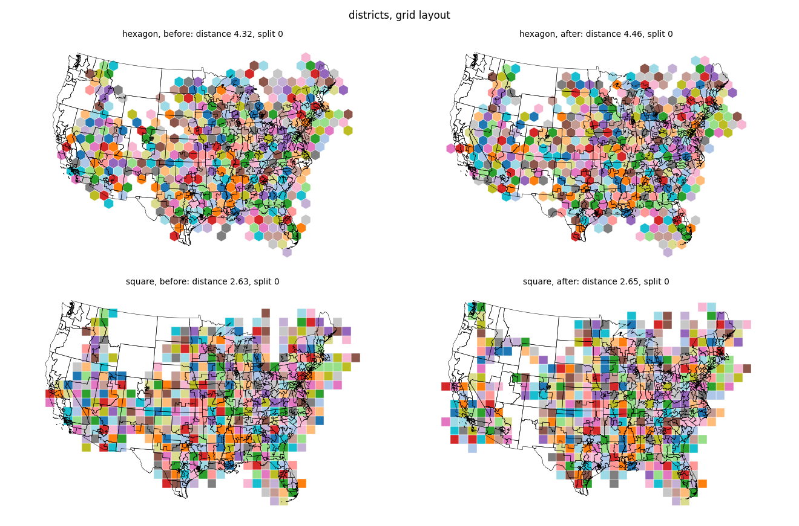
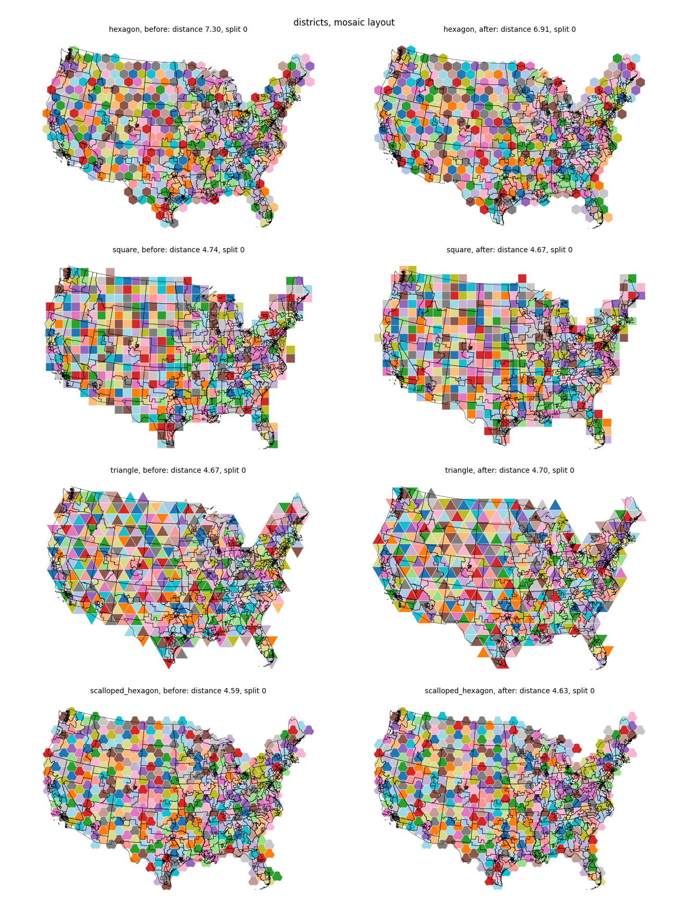
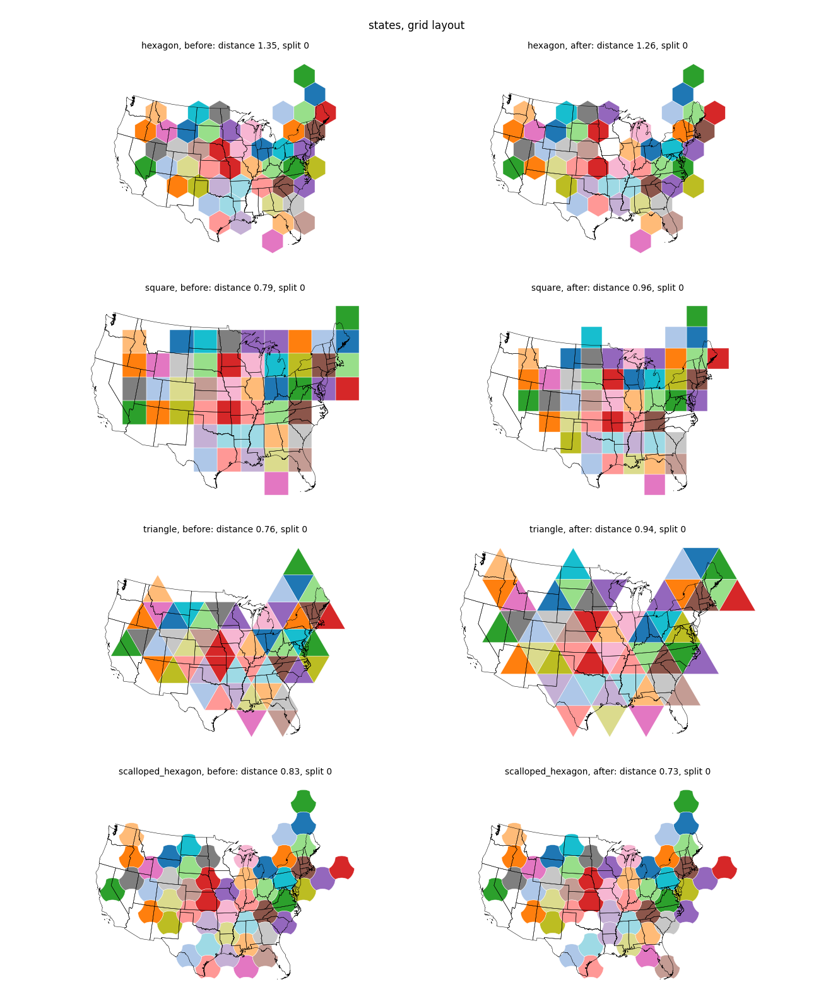
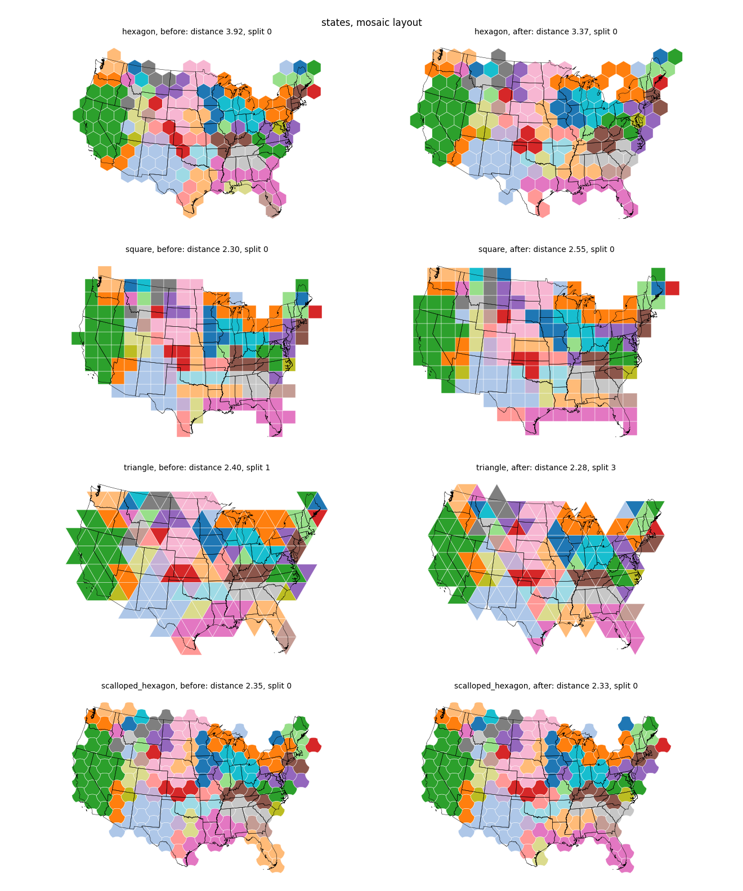
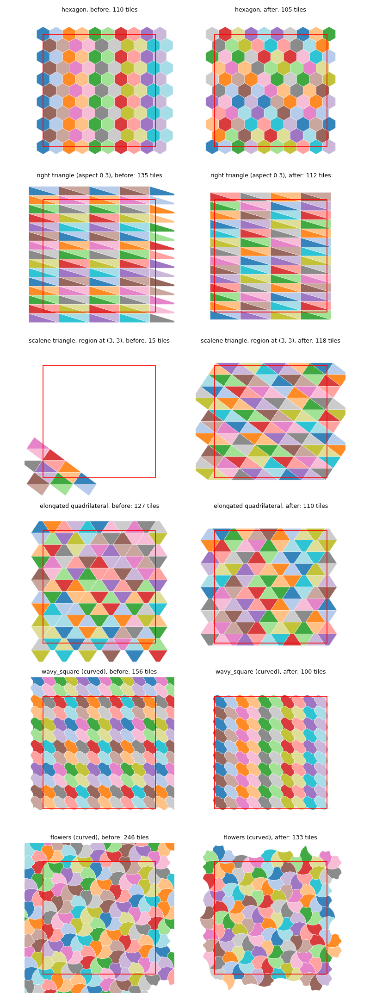

The five tilings of symbol_cartogram/tiling.py become thin wrappers over isotile (about 1,350 lines instead of 2,855), tactile is replaced by an isotile dependency pinned to a commit, TileAdjacencyType, generate_grid and compute_grid_symbol_size are removed, and the lattice is anchored at the region center. Every grid and mosaic layout changes with the lattice position; the figures and the metrics show states and districts with hexagon, square, triangle and curved tilings, and the mosaic repair cost is measured on five inputs. The districts with hexagons take 7.2 s instead of 3.5 s, in the contiguity repair; the other inputs are not slower.
This is step 1 of proposal-isotile-adoption (sections 8.1 and 8.2). Rotation and offset options (step 3) and sparse adjacency (step 2) are not in this PR.
symbol_cartogram/tiling.py: _IsotileTiling holds an isotile.IsohedralTiling whose frame gives the orientation; generate is one fill_region call, the polygons, transforms (center, rotation, flip), dense adjacency matrices and the new optional field tile_set come from the TileSet. SquareTiling, HexagonTiling, TriangleTiling, QuadrilateralTiling and IsohedralTiling keep their constructors and convenience classmethods; the IsohedralTiling methods for types, presets and serialization are one-line delegates to isotile.TileAdjacencyType (the adjacency_type argument takes "edge", "vertex", "vertex-only"), grid.py (generate_grid, compute_grid_symbol_size) with tests/test_grid.py (57 tests), the adjacency helpers and the old IsohedralTiling.generate machinery.pyproject.toml: isotile>=0.1.0.dev0 in dependencies and isotile = { git = ..., rev = "392484c254d44af317a24dcea69bd8dcf44a83fc" } in [tool.uv.sources]. uv lock --locked and uv sync --frozen work, and the CI jobs install isotile from GitHub. The lock file was edited by hand (isotile added, tactile removed) because uv 0.8.17 rewrites the whole file to lock revision 3 (4,400 changed lines).docs/explanations/tiling-system.md rewritten, CHANGELOG breaking-changes block (next release 3.0.0). The migration page docs/migrating-to-3.0.md is step 4.| Count | |
|---|---|
| Full suite | 1,806 passed, 2 skipped, 4 xfailed |
tests/test_tilings.py | 178 (was 124): 100 stay unchanged, rewrites per section 7, new tests of coverage (far from the origin up to 1e6, random triangles and quadrilaterals, symmetric expansion), adjacency kinds, tile_set, serialization, flat-top hexagons |
golden tilings (tests/test_tilings_golden.py) | 19 named + 15 presets + 81 types, 15 symbols, 2 saved-cartogram tests, 1 count test: all pass |
golden layouts (tests/test_tiling_layouts_golden.py) | 10 cases (states: all 9 grid and mosaic cases; districts: mosaic hexagon): all pass |
| removed | tests/test_grid.py 57; 13 tests of the deleted lattice-adjacency helpers; 7 type-info tests and 6 find_types tests and 4 preset tests, which isotile has (test_types.py, test_presets.py, test_edges.py) |
The three lattice-dependent mosaic tests are restated: test_repair_loop_assignment_is_pinned pins the footprints (sorted tile centers of each region) instead of tile indices; test_us_states_needs_more_than_8_hops[False] runs at 350 tiles, where 8 hops strand a region on the new lattice (at 250 and 300 tiles both reaches leave one region split; 16 hops are never worse than 8 at 250, 300 and 350); test_plot_tiling[True] asserts that the core collection exists exactly when core tiles are unassigned, and runs for hexagon and triangle.
ruff check, ruff format, mypy and deptry src pass. The docs build (mkdocs build -s) executes all gallery examples without error and then stops in mkdocs-gallery (OverflowError in _sec_to_readable); the same happens with the sources of main in this environment.
Generated from the tactile-based code before it was deleted: base commit a9b4b7f of main, script golden_tilings.py (PYTHONPATH=<checkout of a9b4b7f>/src python golden_tilings.py tests/data), layout_cases.py and layouts_fixture.py for layouts.json. The fixtures cannot be regenerated after this PR.
| File | Size | Content |
|---|---|---|
tests/data/tilings.npz | 384 KB | per case the old tiles that overlap the region (center, rotation, flip), the canonical tile, edge and vertex-only pairs; the script checks that each old polygon is the canonical tile placed by its transform |
tests/data/symbols.npz | 49 KB | unit polygon, bounding and inscribed radius of the 15 preset symbols |
tests/data/saved_cartogram.json | 41 KB | a 3 x 3 hexagon grid cartogram written by SymbolCartogram.save |
tests/data/layouts.json | 3 KB | placement metrics of the old layouts and the range of the mean distance over six lattice shifts |
Results of the comparison (tolerances of section 5.1): all old tiles that overlap the region have a tile at the same center in 19 of 19 named cases and 81 of 81 types; vertex gap at most 1e-9 of the tile size; rotation and flip equal; edge and vertex-only pairs equal. Exceptions, all expected: wavy_square and scalloped_quad (old edge contacts that are vertex-only), puzzle_piece (110 instead of 100 spline samples, gap 1.5e-2), and tiles of the 9 curved presets that the old class returned because a curve reaches into the region while the straight outline does not (isotile selects by the straight outline; see open questions). 409 of the 3,673 old tiles of the named cases do not overlap the region (3,264 are compared).
Mean distance between the centroid of a region and the centroid of its tiles, in tile sizes (grid: one tile per region; mosaic: the region's tiles). The tolerance is the larger of 25 percent of the old value and, for the grid layouts on the states, the range of the same metric over six lattice shifts (hexagon 1.196 to 1.493, square 0.711 to 0.956, triangle 0.757 to 0.961; old and new code together). Mosaic runs use morph=False. Every case is within the tolerance. The seconds of these runs are not given: they ran with other jobs on the machine (the table below the figures has the timings).
| case | lattice tiles old / new | assigned | split old / new | mean distance old / new | change | tolerance | within | largest distance old / new |
|---|---|---|---|---|---|---|---|---|
| states grid hexagon | 149 / 149 | 49 | 0 / 0 | 1.350 / 1.262 | -6 % | 0.337 | yes | 3.53 / 3.10 |
| states grid square | 150 / 160 | 49 | 0 / 0 | 0.787 / 0.956 | +22 % | 0.245 | yes | 2.56 / 2.42 |
| states grid triangle | 190 / 168 | 49 | 0 / 0 | 0.757 / 0.937 | +24 % | 0.204 | yes | 2.00 / 2.08 |
| states grid quadrilateral | 180 / 180 | 49 | 0 / 0 | 0.961 / 0.997 | +4 % | 0.240 | yes | 3.17 / 2.49 |
| states grid scalloped_hexagon | 208 / 179 | 49 | 0 / 0 | 0.834 / 0.735 | -12 % | 0.208 | yes | 2.13 / 2.17 |
| states mosaic hexagon | 470 / 447 | 154 | 0 / 0 | 3.918 / 3.375 | -14 % | 0.980 | yes | 7.89 / 6.33 |
| states mosaic square | 475 / 520 | 154 | 0 / 0 | 2.298 / 2.551 | +11 % | 0.575 | yes | 4.28 / 5.85 |
| states mosaic triangle | 543 / 490 | 154 | 1 / 3 | 2.399 / 2.281 | -5 % | 0.600 | yes | 6.28 / 4.44 |
| states mosaic scalloped_hexagon | 546 / 533 | 154 | 0 / 0 | 2.351 / 2.331 | -1 % | 0.588 | yes | 4.67 / 4.67 |
| districts grid hexagon | 1125 / 1159 | 432 | 0 / 0 | 4.318 / 4.457 | +3 % | 1.080 | yes | 10.20 / 9.64 |
| districts grid square | 1290 / 1320 | 432 | 0 / 0 | 2.625 / 2.655 | +1 % | 0.656 | yes | 6.02 / 10.23 |
| districts mosaic hexagon | 1178 / 1163 | 432 | 0 / 0 | 7.297 / 6.908 | -5 % | 1.824 | yes | 15.79 / 17.40 |
| districts mosaic square | 1230 / 1260 | 432 | 0 / 0 | 4.737 / 4.673 | -1 % | 1.184 | yes | 9.91 / 10.51 |
| districts mosaic triangle | 1316 / 1316 | 432 | 0 / 0 | 4.667 / 4.698 | +1 % | 1.167 | yes | 10.88 / 9.44 |
| districts mosaic scalloped_hexagon | 1358 / 1283 | 432 | 0 / 0 | 4.591 / 4.632 | +1 % | 1.148 | yes | 9.45 / 10.26 |
| case | lattice tiles old / new | assigned | split old / new | mean distance old / new | change | tolerance | within | largest distance old / new |
|---|---|---|---|---|---|---|---|---|
| states grid hexagon | 149 / 149 | 49 | 0 / 0 | 1.350 / 1.262 | -6 % | 0.337 | yes | 3.53 / 3.10 |
| states grid square | 150 / 160 | 49 | 0 / 0 | 0.787 / 0.956 | +22 % | 0.245 | yes | 2.56 / 2.42 |
| states grid triangle | 190 / 168 | 49 | 0 / 0 | 0.757 / 0.937 | +24 % | 0.204 | yes | 2.00 / 2.08 |
| states grid quadrilateral | 180 / 180 | 49 | 0 / 0 | 0.961 / 0.997 | +4 % | 0.240 | yes | 3.17 / 2.49 |
| states grid scalloped_hexagon | 208 / 179 | 49 | 0 / 0 | 0.834 / 0.735 | -12 % | 0.208 | yes | 2.13 / 2.17 |
| states mosaic hexagon | 470 / 447 | 154 | 0 / 0 | 3.918 / 3.375 | -14 % | 0.980 | yes | 7.89 / 6.33 |
| states mosaic square | 475 / 520 | 154 | 0 / 0 | 2.298 / 2.551 | +11 % | 0.575 | yes | 4.28 / 5.85 |
| states mosaic triangle | 543 / 490 | 154 | 1 / 3 | 2.399 / 2.281 | -5 % | 0.600 | yes | 6.28 / 4.44 |
| states mosaic scalloped_hexagon | 546 / 533 | 154 | 0 / 0 | 2.351 / 2.331 | -1 % | 0.588 | yes | 4.67 / 4.67 |
| districts grid hexagon | 1125 / 1159 | 432 | 0 / 0 | 4.318 / 4.457 | +3 % | 1.080 | yes | 10.20 / 9.64 |
| districts grid square | 1290 / 1320 | 432 | 0 / 0 | 2.625 / 2.655 | +1 % | 0.656 | yes | 6.02 / 10.23 |
| districts mosaic hexagon | 1178 / 1163 | 432 | 0 / 0 | 7.297 / 6.908 | -5 % | 1.824 | yes | 15.79 / 17.40 |
| districts mosaic square | 1230 / 1260 | 432 | 0 / 0 | 4.737 / 4.673 | -1 % | 1.184 | yes | 9.91 / 10.51 |
| districts mosaic triangle | 1316 / 1316 | 432 | 0 / 0 | 4.667 / 4.698 | +1 % | 1.167 | yes | 10.88 / 9.44 |
| districts mosaic scalloped_hexagon | 1358 / 1283 | 432 | 0 / 0 | 4.591 / 4.632 | +1 % | 1.148 | yes | 9.45 / 10.26 |
make_figures.py draws the layouts of layout_cases.py (run once with the sources of a9b4b7f and once with this branch); make_tiling_figure.py draws the tilings. Tiles are colored by region, the same color before and after; the black outlines are the input regions.
repair_cost.py times the stages of MosaicLayout (morph=False) with wrappers on Tiling.generate, calibrate_tiling, hungarian_morphed_assignment (it contains the connectivity repair loop), _relocate_ring_tiles, _chain_swap_repair (it contains repair_contiguity) and _count_split_units, best of 3. A second, untimed run counts the work from the progress output. Old (a9b4b7f) and new code ran one after the other in one session with nothing else running (repair_old.json, repair_new.json, tables by repair_table.py). Inputs: districts (432 districts, one tile count per district, grouped by state), states (49 states, 150 tiles), texas (254 counties, about 400 tiles), districts-division (the districts grouped by Census division), grid-10x10 (100 unit squares with 2 to 6 tiles; a rectangular, symmetric union). Hexagon and square tilings. Each cell: old / new.
| input | tiling | wall old / new (s) | calibrate old / new | hungarian old / new | ring relocation old / new | chain swap old / new | _count_split_units calls old / new |
|---|---|---|---|---|---|---|---|
| grid-10x10 | hexagon | 1.06 / 0.58 | 0.63 / 0.29 | 0.18 / 0.17 | 0.15 / 0.02 | 0.00 / 0.00 | 244 / 37 |
| grid-10x10 | square | 0.67 / 0.51 | 0.41 / 0.22 | 0.16 / 0.21 | 0.01 / 0.00 | 0.00 / 0.00 | 22 / 4 |
| districts | hexagon | 3.49 / 7.21 | 0.71 / 0.84 | 1.40 / 1.29 | 0.06 / 0.19 | 0.12 / 3.64 | 120 / 438 |
| districts | square | 5.69 / 5.00 | 2.71 / 2.34 | 1.25 / 1.24 | 0.07 / 0.03 | 0.51 / 0.30 | 166 / 68 |
| states | hexagon | 1.08 / 1.88 | 0.30 / 1.11 | 0.33 / 0.31 | 0.01 / 0.04 | 0.02 / 0.00 | 47 / 163 |
| states | square | 0.95 / 0.92 | 0.29 / 0.27 | 0.27 / 0.28 | 0.03 / 0.01 | 0.01 / 0.00 | 104 / 28 |
| texas | hexagon | 2.36 / 1.06 | 1.52 / 0.20 | 0.48 / 0.49 | 0.06 / 0.08 | 0.00 / 0.00 | 45 / 76 |
| texas | square | 1.12 / 0.98 | 0.22 / 0.17 | 0.54 / 0.49 | 0.06 / 0.04 | 0.00 / 0.01 | 50 / 29 |
| districts-division | hexagon | 3.29 / 3.44 | 0.70 / 0.72 | 1.28 / 1.41 | 0.03 / 0.04 | 0.00 / 0.00 | 52 / 58 |
| districts-division | square | 5.31 / 4.90 | 2.79 / 2.35 | 1.36 / 1.33 | 0.05 / 0.07 | 0.00 / 0.01 | 96 / 150 |
| input | tiling | lattice tiles | hungarian passes | ring tiles relocated | contiguity passes / swaps | chain swap before -> after | noncontiguous regions | split groups | unassigned core | enclosed |
|---|---|---|---|---|---|---|---|---|---|---|
| grid-10x10 | hexagon | 740 / 739 | 2 / 2 | 24 / 32 | 2/3 / 1/4 | [0, 2]->[0, 0] accepted / [0, 4]->[0, 0] accepted | 0 / 0 | 0 / 0 | 0 / 24 | 0 / 0 |
| grid-10x10 | square | 784 / 784 | 2 / 3 | 14 / 0 | 2/14 / 1/12 | [0, 5]->[0, 0] accepted / [0, 4]->[0, 0] accepted | 0 / 0 | 0 / 0 | 26 / 0 | 0 / 0 |
| districts | hexagon | 1178 / 1163 | 4 / 3 | 24 / 18 | 6/51 / 10/93 | [12, 0]->[0, 0] accepted / [9, 0]->[1, 0] accepted | 0 / 0 | 0 / 1 | 14 / 13 | 0 / 0 |
| districts | square | 1230 / 1260 | 3 / 3 | 25 / 27 | 10/247 / 10/210 | [21, 0]->[1, 0] accepted / [16, 0]->[2, 0] accepted | 0 / 0 | 1 / 2 | 4 / 6 | 0 / 0 |
| states | hexagon | 470 / 447 | 4 / 2 | 9 / 10 | 4/29 / 1/7 | [0, 5]->[0, 0] accepted / [0, 4]->[0, 0] accepted | 0 / 0 | 0 / 0 | 3 / 10 | 0 / 0 |
| states | square | 475 / 520 | 2 / 2 | 12 / 11 | 3/31 / 1/14 | [0, 6]->[0, 0] accepted / [0, 6]->[0, 0] accepted | 0 / 0 | 0 / 0 | 2 / 1 | 0 / 0 |
| texas | hexagon | 1872 / 1809 | 2 / 2 | 22 / 24 | 1/4 / 2/13 | [0, 2]->[0, 0] accepted / [0, 7]->[0, 0] accepted | 0 / 0 | 0 / 0 | 6 / 9 | 0 / 0 |
| texas | square | 1935 / 2024 | 2 / 2 | 24 / 24 | 1/22 / 1/22 | [0, 12]->[0, 2] accepted / [0, 10]->[0, 2] accepted | 2 / 2 | 0 / 0 | 11 / 13 | 0 / 0 |
| districts-division | hexagon | 1178 / 1163 | 3 / 4 | 22 / 18 | 1/2 / 0/0 | [1, 0]->[0, 0] accepted / - | 0 / 0 | 0 / 0 | 16 / 13 | 0 / 0 |
| districts-division | square | 1230 / 1260 | 3 / 3 | 25 / 27 | 2/5 / 0/0 | [3, 0]->[1, 0] accepted / [1, 0]->[1, 0] rejected | 0 / 0 | 1 / 1 | 4 / 6 | 0 / 0 |
Findings:
_chain_swap_repair takes 0.12 s now and 3.64 s on the new lattice (wall time 3.49 s and 7.21 s). The repair starts from a similar state (12 and 9 split regions) but needs 10 passes and 93 swaps against 6 passes and 51 swaps, calls _count_split_units 438 times against 120, and ends with one split group that the old lattice does not have. The time is in repair_contiguity: each pass enumerates candidate chains for every satellite, and a satellite that cannot be repaired is searched again in every pass (read from the code, not profiled per pass). The prototype of the page measured 3.7 s against 8.4 s; this measurement gives 3.5 s against 7.2 s.HungarianOptions(swap_repair_passes=...) of 6, 4 and 2 gives 5.4 s, 4.0 s and 4.0 s and 2 split groups instead of 1 (default 10: 7.5 s and 1 split group). A fix would change repair_contiguity (for example, no new search for a satellite whose search failed and whose neighborhood did not change); it is not part of this PR.perf_generate.py, best of 3 (IH7 once), old perf_old.txt and new perf_new.txt, generate with adjacency: IH7 with 2,385 tiles 7.4 s before and 0.12 s now (2,123 tiles); 4,491 tiles 32 s before and 0.17 s now (4,106 tiles). With 5,000 tiles, before and now: square 0.17 s and 0.058 s, hexagon 0.22 s and 0.061 s, triangle 0.90 s and 0.043 s, quadrilateral 1.24 s and 0.050 s. The mosaic layout of the districts with scalloped_hexagon took 542 s before (with other jobs on the machine) and 5 s now.
adjacency_type="vertex-only" is tested at generate only.TilingResult.plot(color_by="aspect") colors by tile_set.aspect (commit c3ff55b, after the first version of this page) and raises ValueError without a tile set; color_by="rotation" is the former behavior.layouts.json, which come from the old and the new code.plot_prototile draws with isotile's plot; the edges are no longer colored by the categorical colors of the style.migrating-to-3.0.md and the gallery regeneration (step 4).IsohedralTiling.cover selects tiles by the straight outline. For curved tilings a curve can reach across the boundary of the region into a tile that is not returned, so the margin edge can have slivers that no returned tile covers (the old class returned these tiles). With the default margin of 0.1 this does not touch the data; with margin=0 it can. The decision is isotile's (a curved option of cover, or a larger candidate set).offset of step 3).repair_contiguity in a separate PR, or accept.isotile>=0.1.0.dev0 cannot be resolved from PyPI until isotile 0.1.0 is released; the git pin works for development and CI only (decision 2).
Grid layout of the 432 districts, hexagon and square. The largest distance of a region from its tile with squares is 10.2 tile sizes now and 6.0 before; the mean is 2.66 and 2.63.

Mosaic layout of the 432 districts grouped by state, hexagon, square, triangle and scalloped_hexagon.

Grid layout of the 49 states, hexagon, square, triangle and scalloped_hexagon (curved), old left and new right.

Mosaic layout of the states (154 tiles, morph=False), same four tilings. With triangles 3 regions are split in the new layout (1 in the old).

Tilings of the region (-1, -1, 1, 1) with margin 0.1 (red), old left, new right: hexagon, a right triangle (aspect 0.3), a scalene triangle with the region at (3, 3) (the old class returns 15 tiles, none inside the region), an elongated quadrilateral, and the curved presets wavy_square and flowers.